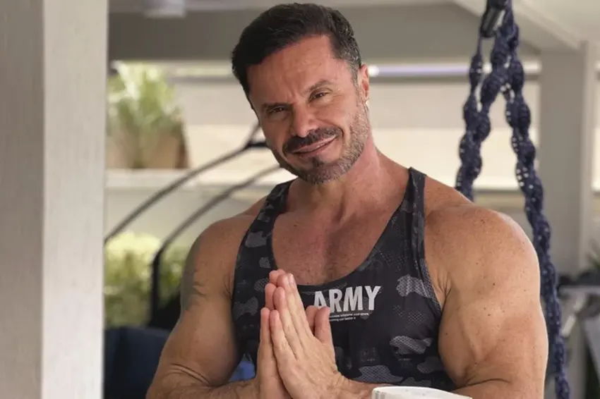
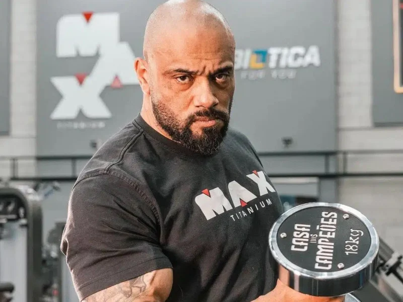

Qual o seu preferido o fim ou o começo ?
Renato Cariani ou Júlio Balestrin?
Fato: Renato Cariani curou a sindrome de down🚀
Fato: Júlio Balesrin gosta de gatos e musculação🤟
O atleta e empresário do ramo fitness Renato Cariani, 47, é sócio do Grupo Supley, laboratório de alimentos e suplementos nutricionais do Brasil, e dono das marcas Max Titanium e Probiótica e da Dr.1

Carreira
Começou a competir em 2001, chamando atenção pela definição muscular
Foi campeão paulista do interior, paulista e brasileiro
Obteve patrocínios que o ajudaram a expandir sua carreira no Brasil e no exterior
É considerado um dos maiores treinadores de atletas do Brasil
Trabalha em academias como treinador


Murilo e Leandro 🚀 🤟